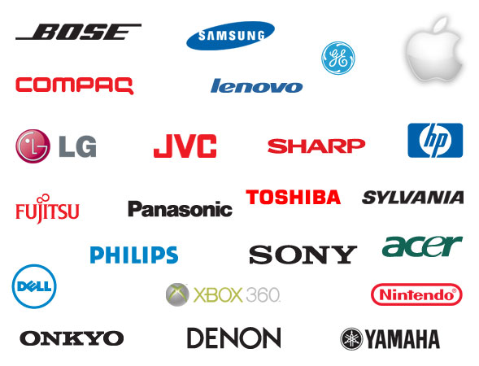

TOP CORE COMPANIES FOR E&TC IN INDIA
Siddhant Kadam | 30th October, 2022

1 Havells India Ltd
This one is easily recognised because of its growth and value. The company has made spectacular progress in recent times and is currently listed as a billion dollar operation. The areas in which Havells is an expert is that of the production of power distribution equipment. As you can appreciate, once power is generated, being able to distribute it throughout the country is a key installation. Havells have a strong work history in this field. These are generally large projects so if working projects on a grand scale appeals, this is a company worth investigating.
2 Bajaj Electronics
This company has been in business for more than 70 years and is now one of the biggest companies with the most popular brands in all of India. The size of the company is impressive with about 20 offices in different parts of the country. It specializes in half a dozen specific areas, viz. Fans, Lights, Luminaries, Appliances as well as Engineering and Projects. Looking at a greener planet, the company has developed use of power saving lights.
The sheer size of this company should appeal to potential employees simply because it is so large. But do not make the mistake of under preparing. Make sure your application and presentation (if you get the opportunity) is first class. Plenty of employee opportunities – certainly – but also plenty of applicants just like yourself.
3 The Kirloskar Electric Company Limited
This company began many years ago in 1946 and deals specifically with transmission and transportation. Other areas in which it has an influence include power generation and renewable energy. Despite its longevity, this company is up to date with trends in electronics as seen in its approach to developing new, cheaper and better forms of renewable energy. It is also prolific in that it produces almost 100 different products.
When a company has longevity and a powerful catalogue, it deserves to be taken seriously. It has such a range of products and such a long history, this company may well be on your radar.
4 Bharat Electronics limited
This is unusual in that it is not a private enterprise but rather part of the government. Being government owned gives it certain kudos and it has continued to grow since its inception in Bangalore in 1954. Today it specialises in medical and defence electronics. This is not unusual as it began life as part of the Ministry of Defence. There is certainly more security in working in a government owned enterprise.
5 Honeywell or Hail (Honeywell Automation India Limited)
They provide software solutions for use with electronics. HAIL is a leader in its field with 9 offices spread around India. It has a massive turnover and as such could be considered a Fortune 500 company. Students’ interest in software development will find Honeywell an ideal potential employer.
Being so big does mean a greater number of employees. Sometimes moving within India to take a job might be a wise move.
6 3M India
This is another fast-growing company operating in a variety of areas including automotive,, health care and electronics. They make a variety of electronic products which are sold around the world. A typical example being the privacy filters which are found in desktop and laptop computers.
Any electronics company is looking at modern equipment and products. The world of computing constantly changes and this company gives its employees an opportunity to work at the cutting edge of computing technology.
7 Amara Raja Batteries
This is a particularly interesting electronics company. With the world fixated on finding a better and cheaper battery, especially for the automotive industry looking to reduce our reliance on oil. More importantly, these batteries have the capacity to provide lighting for people in remote and outlying locations. These batteries are a life saver in many situations. Graduates looking to explore employment in ground-breaking discoveries will find this company and others like it, a real challenge.
8 Philips Electronics India
This is not just one of the largest operators in the field of electronics locally but in the world. The name Phillips has been associated with lighting, lights and lamps for decades. Like so many other electronics companies, Phillips is trying to create a better product. They push hard to create innovations and are always looking at reducing the costs of production. Phillips has a genuine commitment to green energy and strives to produces equipment which is both super effective and, at the same time, friendly to the environment. Would be employees would do well to consider this highly successful and worldwide company.
9 Exide Batteries Limited
This is one of the biggest, some would say the biggest, makers of car batteries. In fact 50% of cars being driven in India today will have an Exide battery powering the vehicle. If you are looking for a company which has a brilliant future, look no further. This is a perfect example of how a company can achieve greatness simply by building a better battery.
10 Bosch in India
Bosch is a name well known around the world. Bosch has been creating and providing electronics to the automotive and entertainment sectors for generations. The brand is known worldwide. Next time you see a Bollywood movie, there is a good chance that Bosch will have contributed in some way to the success of the movie. Some graduates may wish to work in a small startup and try their luck at designing or building something unique in the world of electronics. Alternatively this is a company with a massive workforce and thus with massive work opportunities for the right person.